Reinforcement Learning e
a Era da Experiência
INF – Universidade Federal do Rio Grande do Sul
lnalegre@inf.ufrgs.br
ECOA 2025 – III Escola de Computação Avançada
24 de outubro de 2025
Alan Turing e IA
“Máquinas conseguem pensar?”
“Um computador mereceria ser chamado de inteligente se pudesse enganar um humano a acreditar que também é humano.”
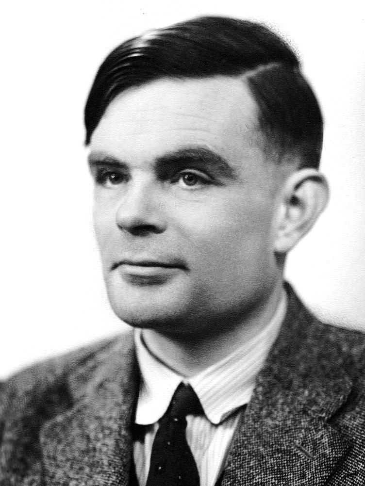
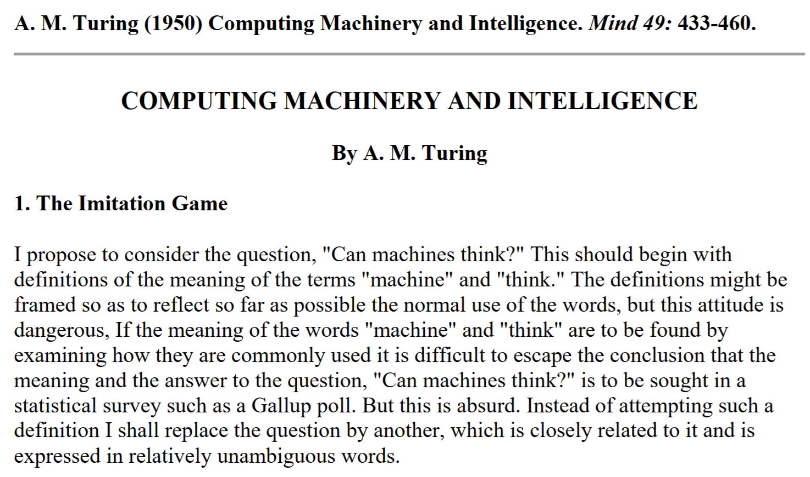
Turing e Reinforcement Learning
“We normally associate punishments and rewards with the teaching process.”
“The machine has to be so constructed that events which shortly preceded the occurrence of a punishment signal are unlikely to be repeated, whereas a reward signal increased the probability of repetition of the events which led up to it.”
“What we want is a machine that can learn from experience”.
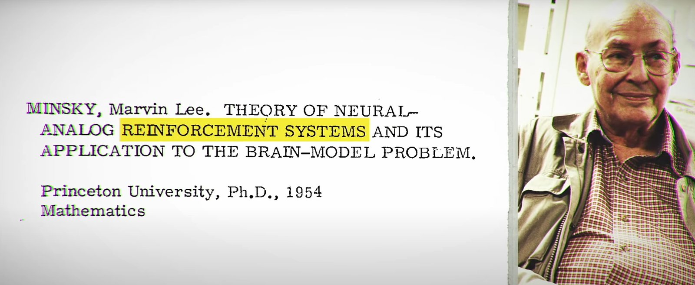
Arthur Samuel – Checkers (1959)
- Popularizou o termo “machine learning”.
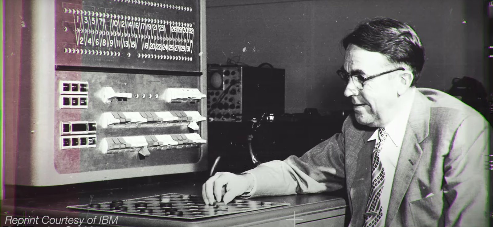
Turing Award 2025
- Andrew Barto e Richard Sutton
- Prêmio mais importante na computação
- “Desenvolvimento das fundações teóricas de reinforcement learning, um método chave em muitos tipos de IA.”
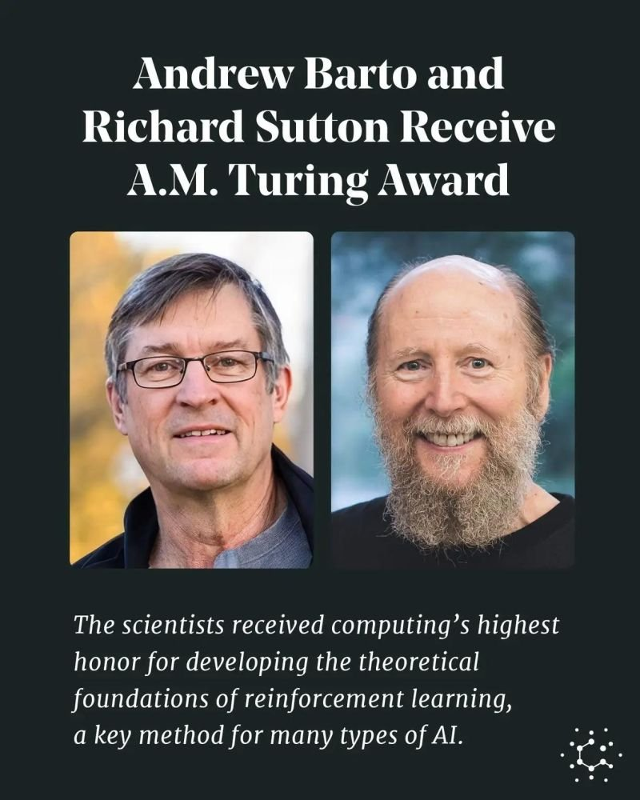
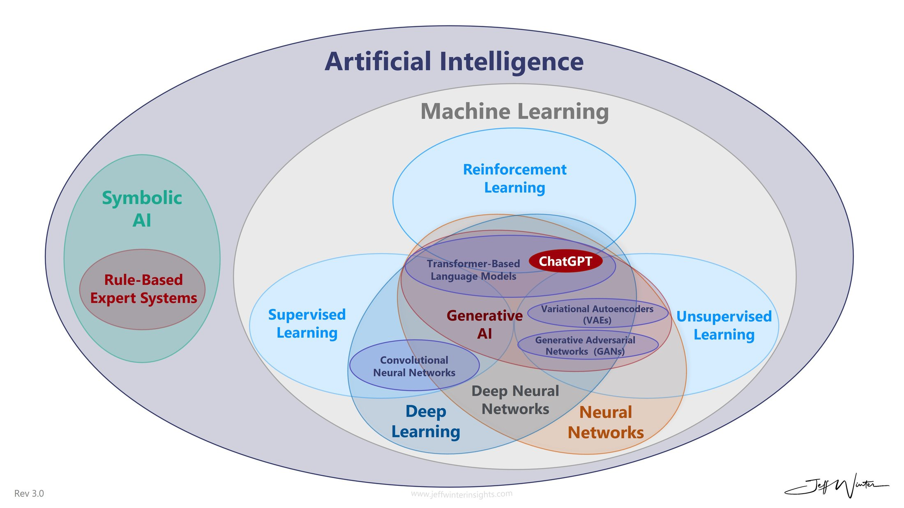
Supervised Learning
- Supervisor indica a resposta desejada para cada padrão de treinamento.
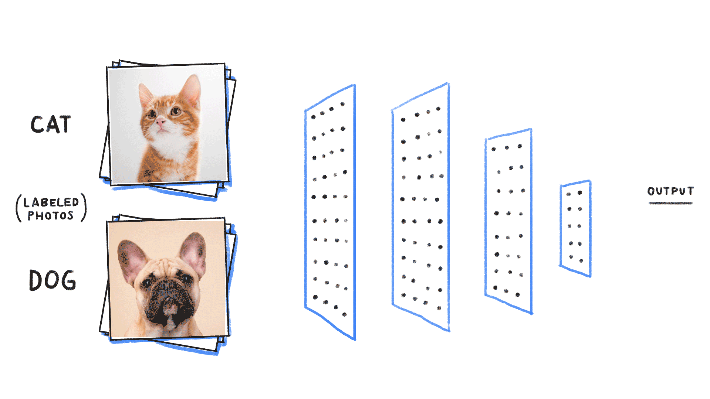
Unsupervised Learning
- Não existe supervisor indicando a resposta desejada.
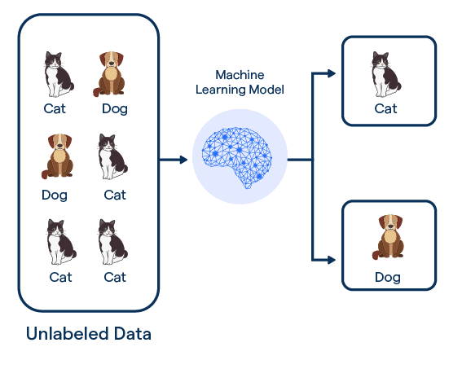
Reinforcement Learning
- Aprender como agir
- Sem um professor
- Sem conhecimento prévio do ambiente
- Somente com base em recompensas (e punições)
- Reforços positivos
- Aumentam probabilidade de comportamento
- Reforços negativos
- Diminuem tal probabilidade
Agente
Ação
Próx. Estado
Recompensa
Ambiente
Reinforcement Learning
Agente
Ambiente
estado (s_t)
ação (a_t)
reward (r_t)
Política \textcolor{#00B050}{\pi : S \mapsto A}
\pi^* = \max\limits_{\pi} \sum\limits_t \gamma^t r_t
Temporal Difference (TD) Learning
- Tese de Doutorado do Richard Sutton orientada pelo Andrew Barto
- Relacionado a Dynamic Programming
- Fortes relações com o sistema de dopamina do nosso cérebro
- Influência na área de neurociência
- A diferença entre a recompensa que o agente ganhou e o quanto de recompensa ele achava que iria ganhar
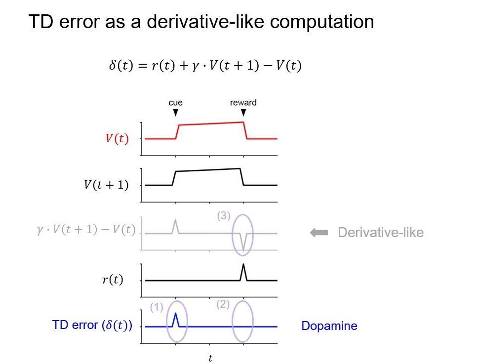
Atenção em RL
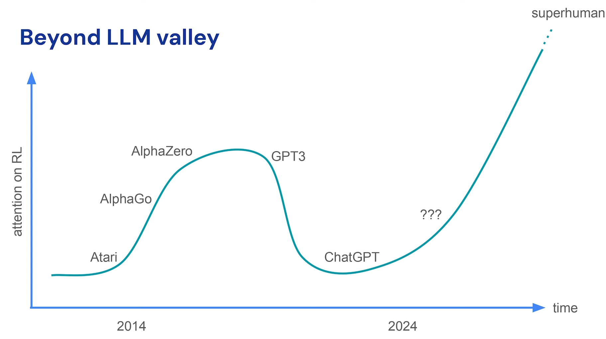
Towards Superhuman Intelligence. David Silver (RLC 2024)
Atari - DQN
Human-Level Control through Deep Reinforcement Learning. Mnih et al. (Nature 518, 2015)
Atenção em RL
Towards Superhuman Intelligence. David Silver (RLC 2024)
Alpha Go
Mastering the Game of Go with Deep Neural Networks and Tree Search. Silver et al. (Nature 529, 2016)
Atenção em RL
Towards Superhuman Intelligence. David Silver (RLC 2024)
Alpha Zero
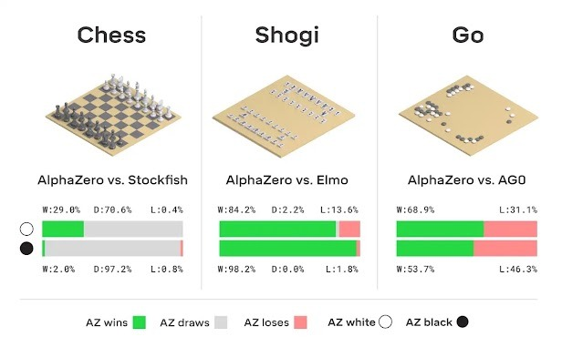
A General Reinforcement Learning Algorithm That Masters Chess, Shogi, and Go through Self-Play. Silver et al. (Science 362, 2018)
Atenção em RL
Towards Superhuman Intelligence. David Silver (RLC 2024)
Robótica
BDX Droids – Disney Research
Robótica
Walk, Run, Crawl, RL Fun | Boston Dynamics | Atlas
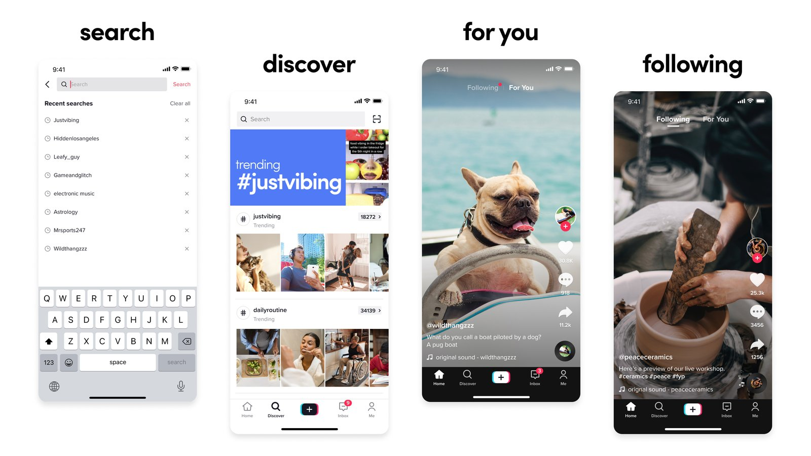
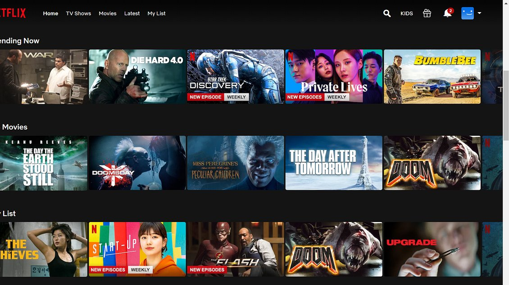
Atenção em RL
2020
Towards Superhuman Intelligence. David Silver (RLC 2024)
Large Language Models (LLMs)
- Modelo de ML sofisticado que prevê qual palavra vem a seguir em qualquer trecho de texto.
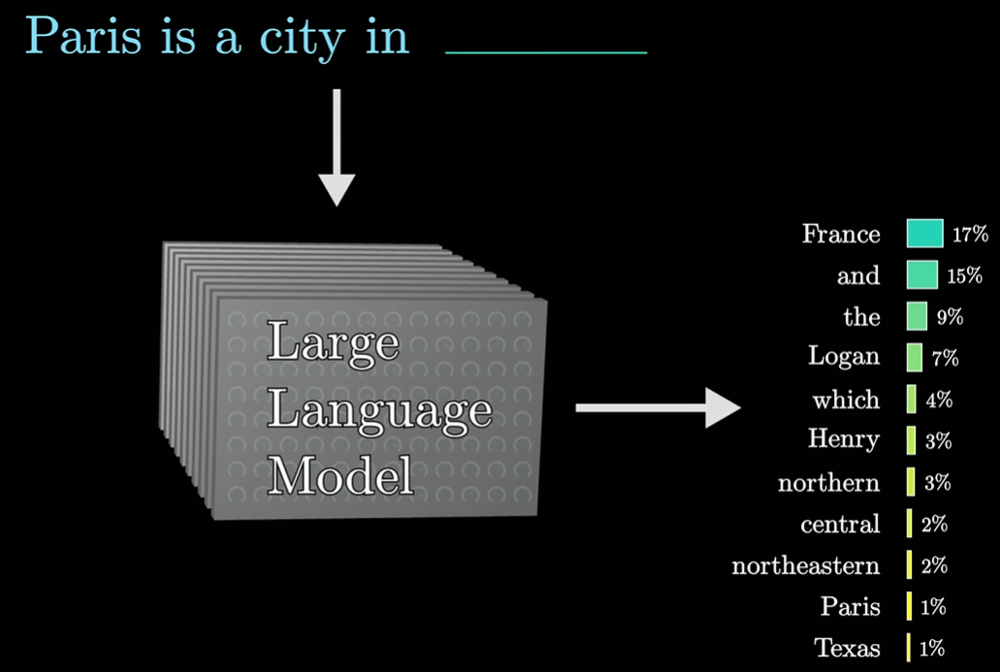
Large Language Models (LLMs)
- RL sendo usado no pós-treinamento
- RLHF, Chain-of-Thought
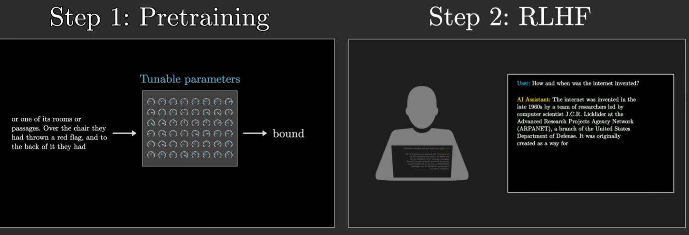
Atenção em RL
AlphaProof
Towards Superhuman Intelligence. David Silver (RLC 2024)
AlphaProof
- AlphaProof, da DeepMind, combina LLMs com RL para provar teoremas matemáticos automaticamente no sistema Lean.
- Aprende de forma autônoma, gerando provas verificadas e melhorando com autoaprendizado contínuo.
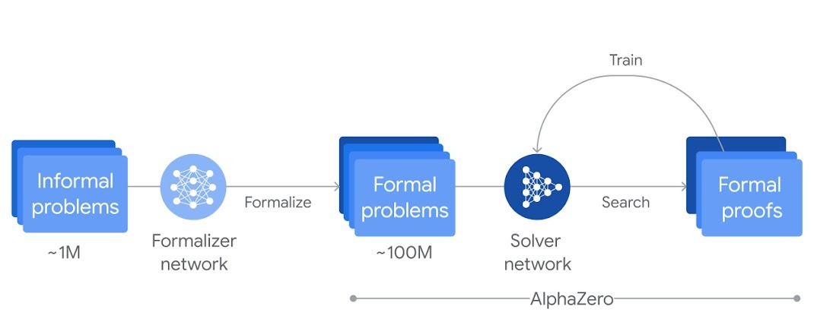
AlphaProof – IMO 2024
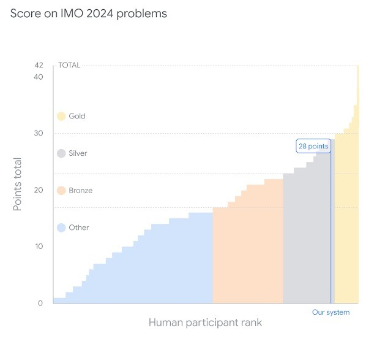
Atenção em RL
AlphaProof???
Towards Superhuman Intelligence. David Silver (RLC 2024)
A Era dos Dados Humanos
- IA treinada com dados gerados por humanos na internet
- Fine-tuned por experts humanos (preferências e exemplos)
- Treinada para predizer a próxima palavra de humanos
- Não para predizer ou controlar o mundo ao seu redor
- Nós estamos começando a chegar no limite dos dados humanos
- A maioria das fontes de dados de maior qualidade já foram usadas
- Gerar novo conhecimento está além dos métodos atuais
A Era da Experiência - Richard Sutton
- IA precisa de uma fonte de dados que cresça e melhore enquanto o agente aprende
- Dados estáticos não são suficientes
- Esses dados podem ser gerados através da interação do agente com o mundo – sua experiência
- É assim que os humanos e outros animais aprendem
- Foi assim que o AlphaGo aprendeu o criativo movimento 37
- Foi assim que o AlphaProof ganhou uma medalha na International Mathematical Olympiad
A Era da Experiência
- Um agente troca sinais – sensações e ações – com o mundo
- Constitui sua experiência
- Aprendizado é através de experiência
- O agente é inteligente na medida que ele pode predizer e controlar seus sinais de input
- Em particular sua recompensa
- Reinforcement Learning (RL) é baseado nessa ideia
As LLMs podem alcançar inteligência super-humana?
- LLM são treinadas apenas através de dados humanos
- Aprendem o que o humanos sabem
- Habilidade para entender e imitar (pré-treinamento)
- Pode ser fine-tuned para novas distribuições (e.g., RLHF)
- Não conseguem se autocorrigir
- Para entender como o mundo realmente funciona
- E não como os humanos dizem que o mundo funciona
Receita: Super-Scale RL
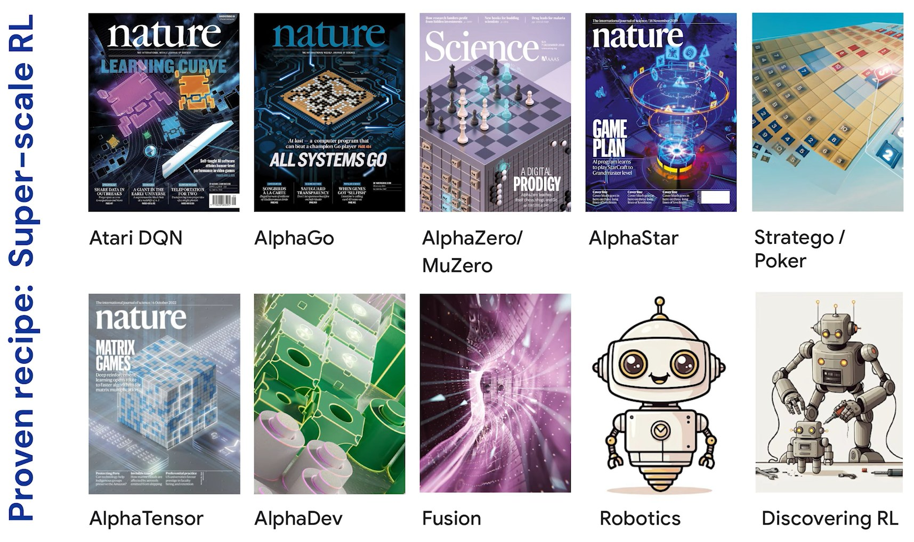
Essa Receita se Aplica a LLMs?
- Claro!
- Prover melhorias “sem fim”
- Capacidades super-humanas
- Além dos dados de treinamento
Reward is Enough
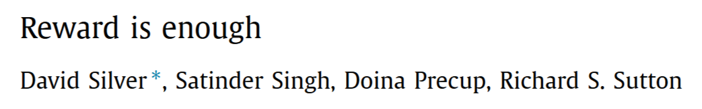
- “we hypothesise that intelligence, and its associated abilities, can be understood as subserving the maximisation of reward”
- “The generic objective of maximising reward is enough to drive behaviour that exhibits most if not all abilities that are studied in natural and artificial intelligence”
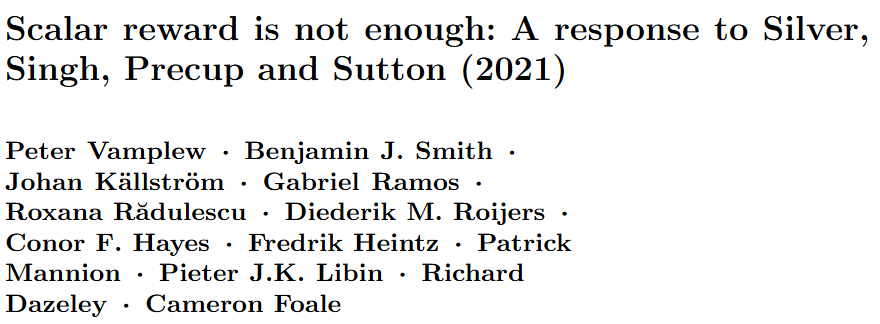
O mundo real é multiobjetivo
- Dirigir envolve equilibrar velocidade, segurança, conforto, tempo de viagem, …
Aggressive behavior
Safe behavior
Outracing champion Gran Turismo drivers with deep reinforcement learning. Wurman et al. (Nature 602, 2022)
O mundo real é multiobjetivo
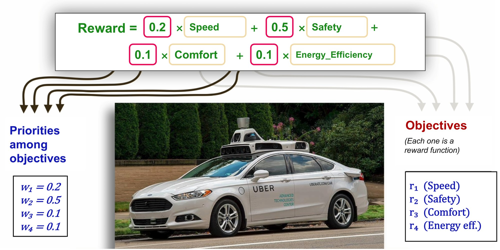
Multi-Objective RL
Goal: Learn a set of policies \Pi = \{\pi_1, \dots, \pi_n\} guaranteed to contain an optimal policy for any preferences over objectives
Sample Efficiency in RL
- Thousands of environment interactions are required to learn one policy
Sample Efficiency in MORL
- Many thousands of environment interactions are required to learn a set of policies! (one for each user preference)
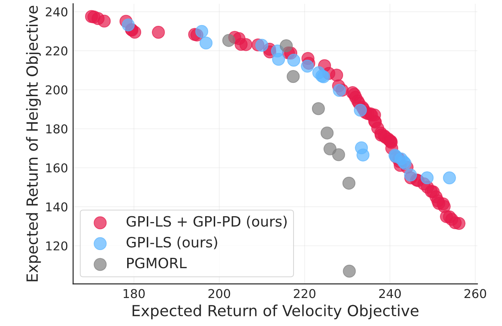
Infeasible in real-world settings!
e.g. autonomous driving, healthcare, robotics
How to learn a set of policies containing optimal policies for
any user preference in a sample-efficient manner?
MO Hopper – Pareto Front
Aprendizado por Reforço Multiobjetivo
- MO Super Mario Bros.
- 4 objetivos
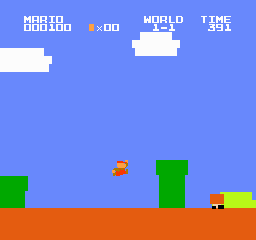

Time vs. Killing Enemies

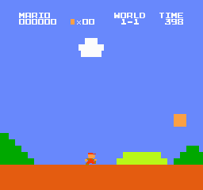
Coins vs. Time
Sample-Efficient Multi-Objective Learning via Generalized Policy Improvement Prioritization. Alegre et al. (AAMAS 2023)
Scaling GPI-LS to Image-Based Tasks
- MO Super Mario Bros.
- 4 objectives
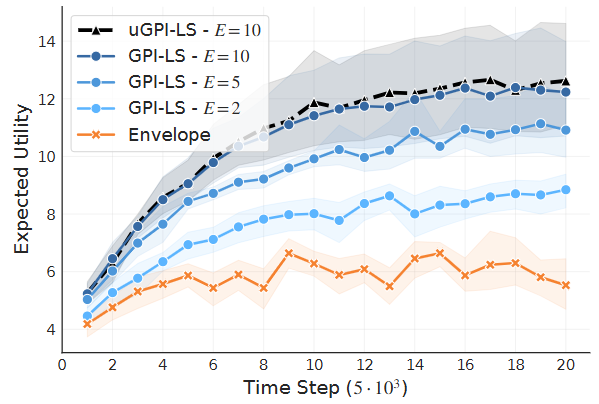
- GPI-LS performance improves as the ensemble size increases
Disney Research
- Novo método que controla as preferências entre os objetivos on-the-fly
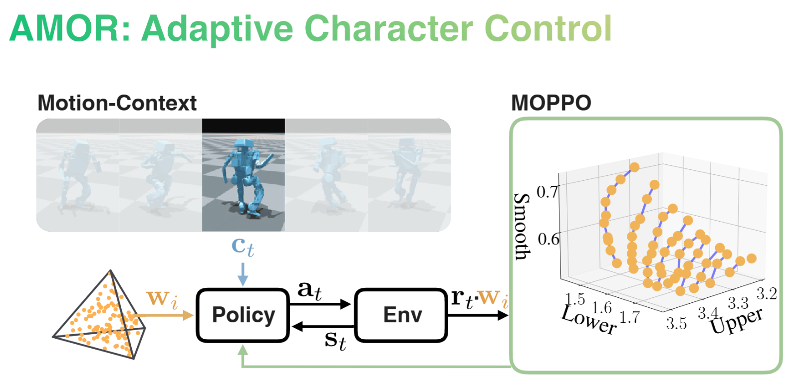
AMOR: Adaptive Character Control through Multi-Objective Reinforcement Learning. Alegre et al. (SIGGRAPH 2025)
Além de Recompensas
- Model-Based RL
- Aprender um modelo do mundo
- Treinar o agente usando experiências geradas pelo modelo
- Abstrações Temporais
- Aprendizado hierárquico
- Ir até a porta vs. Mover a perna 2cm
NeurIPS 2023
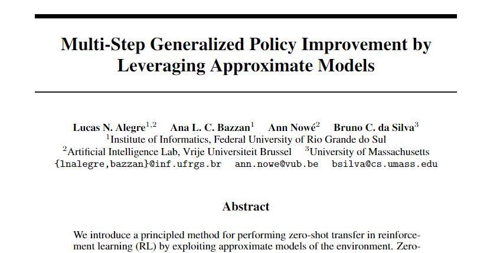
NeurIPS 2025
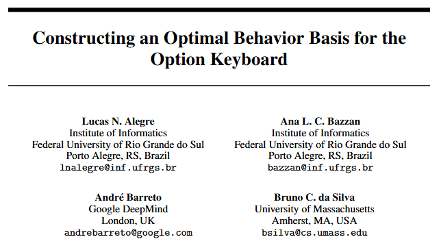
Sumário
- A IA dos anos 2020s – aprendizado via dados humanos – está indo muito bem
- Mas estamos entrando numa nova era, onde IA aprenderá através de experiência
- LLMs sozinhas não são suficientes para inteligência super-humana
- Escalar métodos de RL é um caminho promissor
- LLMs não são oposição, mas forte aliadas!
- Exemplo: AlphaProof
- É só o começo.
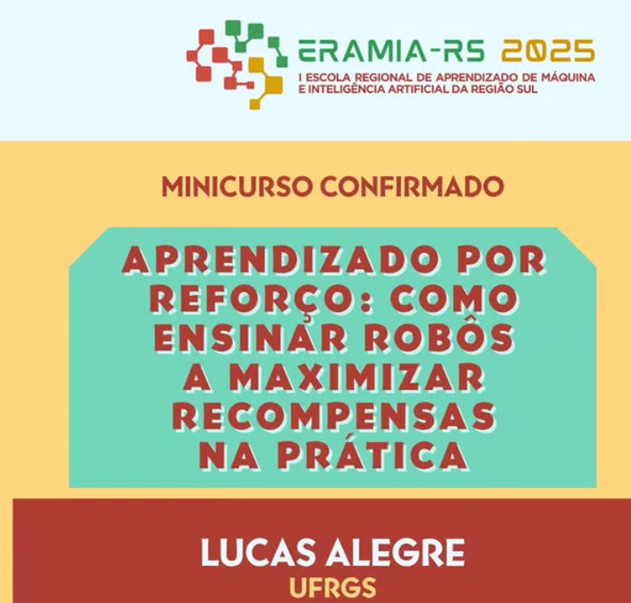
Como saber mais?
- “Reinforcement Learning: An Introduction” (Sutton & Barto)
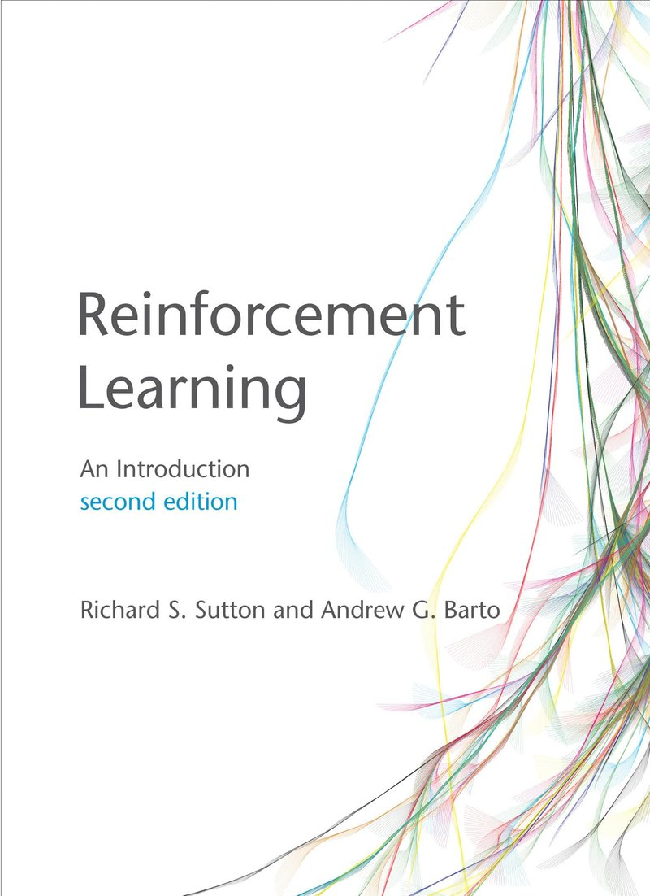
- Disciplina de Aprendizado por Reforço do INF
- Prof. Anderson Tavares
- lnalegre@inf.ufrgs.br
- Sala 233 – Prédio 43424
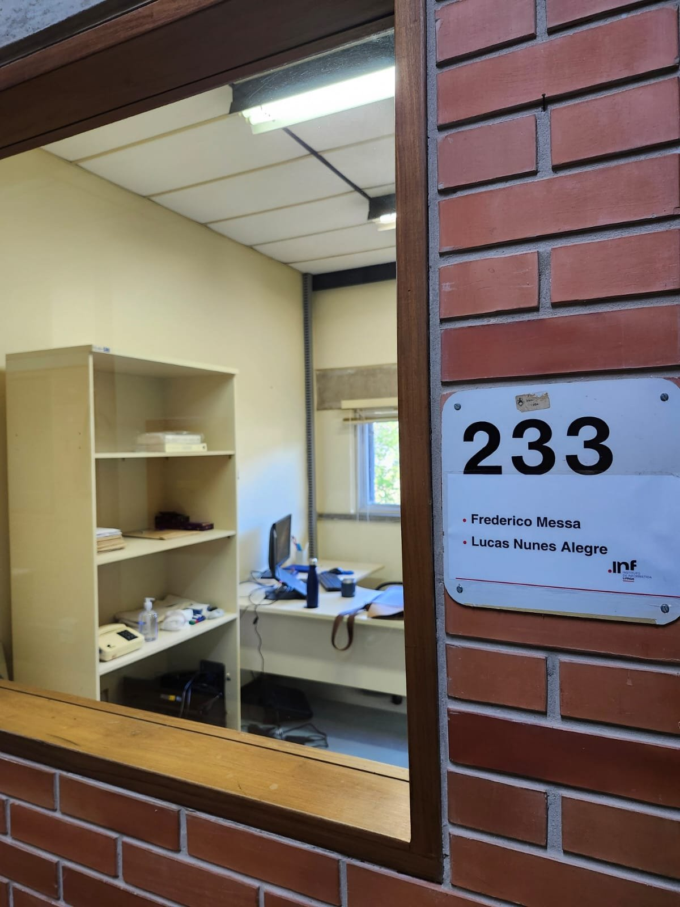
Muito Obrigado!